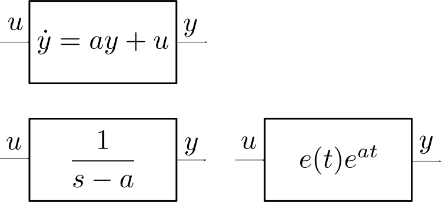

| 🐍 | Code | 🔠| Worked Example |
| 📈 | Graph | 🧩 | Exercise |
| 🏷️ | Definition | 💻 | Numerical Method |
| 💠| Theorem | 🧮 | Analytical Method |
| 📠| Remark | 🧠| Theory |
| â„¹ï¸ | Information | 🗝️ | Hint |
| âš ï¸ | Warning | 🔓 | Solution |
System initially at rest. \(x(0) = 0.\)
Black box. The system state \(x(t)\) is unknown.
Input/Output (I/O). The input determines the output:
\[ u(t), \, t\geq 0 \; \to \; y(t), \, t\geq 0. \]
The variation of constants method yields
\[ y(t) = \int_0^{t} C e^{A(t-\tau)} B u(\tau) \, d\tau + D u(t). \]
A signal is a time-dependent function
\[ x(t) \in \mathbb{R}^n, \; t \in \mathbb{R}. \]
It is causal if
\[ t< 0 \; \Rightarrow \; x(t) = 0. \]
In the sequel, we will assume that time-dependent functions defined only for non-negative times
\[ x(t), \, t \geq 0 \]
are zero for negative times
\[ x(t) = 0, \; t < 0. \]
With this convention, they become causal signals.
The Heaviside function is the causal signal defined by
\[ e(t) = \left| \begin{array}{c} 1 & \mbox{if } \; t\geq 0, \\ 0 & \mbox{if } \; t < 0. \end{array} \right. \]
🏷️ Synonym: (unit) step signal.
The system impulse response is defined by:
\[ H(t) = (C e^{At} B) \times e(t) + D \delta(t) \in \mathbb{R}^{p \times m} \]
the formula is valid for general (MIMO) systems.
🏷️ MIMO = multiple-input & multiple-output.
\(\delta(t)\) is the unit impulse signal, we’ll get back to it (in the meantime, you may assume that \(D=0\)).
When \(u(t) \in \mathbb{R}\) and \(y(t) \in \mathbb{R}\) the system is SISO.
🏷️ SISO = single-input & single-output.
Then \(H(t)\) is a \(1 \times 1\) matrix.
We identify it with its unique coefficient \(h(t)\):
\[ H(t) \in \mathbb{R}^{1\times 1} = [h(t)], \; h(t) \in \mathbb{R}. \]
Let \(u(t)\), \(x(t)\), \(y(t)\) be causal signals such that:
\[ \left| \begin{array}{rcl} \dot{x}(t) &=& A x(t) + B u(t) \\ y(t) &=& C x(t) + Du(t) \end{array} \right., \, t\geq 0 \; \mbox{ and } \; x(0) = 0. \]
Then
\[ y(t) = (H \ast u) (t) := \int_{-\infty}^{+\infty} H(t - \tau) u(\tau) \, d\tau . \]
The operation \(\ast\) is called a convolution.
Consider the SISO system
\[ \left| \begin{array}{ccl} \dot{x} &=& ax + u \\ y &=& x \\ \end{array} \right. \]
where \(a \neq 0\).
We have
\[ \begin{split} H(t) &= (C e^{At} B) \times e(t) + D \delta(t)\\ &= [1]e^{[a]t} [1] e(t) + [0] \delta(t) \\ &= [e(t)e^{at}] \end{split} \]
When \(u(t) = e(t)\) for example,
\[ \begin{split} y(t) &= \int_{-\infty}^{+\infty} e(t - \tau)e^{a(t-\tau)} e(\tau) \, d\tau \\ &= \int_{0}^{t} e^{a(t- \tau)} \, d\tau \\ &= \int_{0}^{t} e^{a \tau} \, d\tau \\ &= \frac{1}{a} \left(e^{a t} - 1 \right) \end{split} \]
Let
\[ \left| \begin{array}{ccc} \dot{x} &=& u \\ y &=& x \\ \end{array} \right. \]
where \(u \in \mathbb{R}\), \(x \in \mathbb{R}\) and \(y \in \mathbb{R}\).
Compute the impulse response of the system.
\[ \begin{split} H(t) &= (C e^{At} B) \times e(t) + D \delta(t)\\ &= [1]e^{[0]t} [1] e(t) + [0] \delta(t) \\ &= [e(t)] \end{split} \]
Let
\[ \left| \begin{array}{ccc} \dot{x}_1 &=& x_2 \\ \dot{x}_2 &=& u \\ y &=& x_1 \\ \end{array} \right. \]
where \(u \in \mathbb{R}\), \(x=(x_1, x_2) \in \mathbb{R}^2\) and \(y \in \mathbb{R}\).
Compute the impulse response of the system.
\[ \begin{split} H(t) &= (C \exp(At) B) \times e(t) + D \delta(t)\\ &= \displaystyle \left[\begin{array}{cc} 1 & 0 \end{array}\right] \exp \left( \left[\begin{array}{cc} 0 & 1 \\ 0 & 0 \end{array}\right] t \right) \left[\begin{array}{c} 0 \\ 1 \end{array}\right] e(t) + [0] \delta(t) \\ &= \displaystyle \left[\begin{array}{cc} 1 & 0 \end{array}\right] \left[\begin{array}{cc} 1 & t \\ 0 & 1 \end{array}\right] \left[\begin{array}{c} 0 \\ 1 \end{array}\right] e(t) \\ &= [t e(t)] \end{split} \]
Let
\[ y = K u \]
where \(u \in \mathbb{R}^m\), \(y \in \mathbb{R}^p\) and \(K \in \mathbb{R}^{p \times m}\).
Compute the impulse response of the system.
The I/O behavior can be represented by \(\dot{x} = 0x+0u\) and \(y= 0 \times x + K u\) (for example). Thus,
\[ \begin{split} H(t) &= (C \exp(At) B) \times e(t) + D \delta(t)\\ &= 0 + K \delta(t)\\ &= K \delta(t) \end{split} \]
Let \[ H(t) := \left[ \begin{array}{cc} e^{t} e(t) & e^{-t} e(t) \end{array} \right] \]
Find a linear system with matrices \(A\), \(B\), \(C\), \(D\) whose impulse response is \(H(t)\).
Is there another 4-uple of matrices \(A\), \(B\), \(C\), \(D\) with the same impulse response?
Same question but with a matrix \(A\) of a different size?
Since
\[ \exp \left( \left[ \begin{array}{rr} +1 & 0 \\ 0 & -1 \end{array} \right] t \right) = \left[ \begin{array}{rr} e^{+t} & 0 \\ 0 & e^{-t} \end{array} \right], \]
the following matrices work:
\[ A = \left[ \begin{array}{rr} +1 & 0 \\ 0 & -1 \end{array} \right], \; B = \left[ \begin{array}{cc} 1 & 0 \\ 0 & 1 \end{array} \right], \; C= \left[ \begin{array}{cc} 1 & 1 \\ \end{array} \right], \; D = \left[ \begin{array}{cc} 0 & 0 \\ \end{array} \right]. \]
Since \[ \begin{split} H(t) &= (C \exp(At) B) \times e(t) + D \delta(t)\\ &= ((-C) \exp(At) (-B)) \times e(t) + D \delta(t) \end{split} \] changing \(B\) and \(C\) to be \[ B = \left[ \begin{array}{rr} -1 & 0 \\ 0 & -1 \end{array} \right], \; C= \left[ \begin{array}{rr} -1 & -1 \\ \end{array} \right], \; \] doesn’t change the impulse response.
We can also easily add a scalar dynamics (say \(\dot{x}_3 = 0\)) that doesn’t influence the impulse response.
The following matrices also work
\[ A = \left[ \begin{array}{rrr} +1 & 0 & 0\\ 0 & -1 & 0 \\ 0 & 0 & 0 \end{array} \right], \; B = \left[ \begin{array}{cc} 1 & 0\\ 0 & 1\\ 0 & 0 \end{array} \right], \]
\[ C= \left[ \begin{array}{cc} 1 & 1 & 0 \\ \end{array} \right], \; D = \left[ \begin{array}{cc} 0 & 0\\ \end{array} \right]. \]
Let \(x(t)\), \(t\in\mathbb{R}\) be a scalar signal.
It Laplace transform is the function of \(s\) given by:
\[ x(s) = \int_{-\infty}^{+\infty} x(t) e^{-st} \, dt. \]
The Laplace transform of a signal is a complex-valued function; its domain is a subset of the complex plane.
\[ s \in D \, \Rightarrow \, x(s) \in \mathbb{C}. \]
If \(x(t)\) is a causal signal of sub-exponential growth
\[ |x(t)| \leq k e^{\sigma t} e(t), \, t \in \mathbb{R}, \]
(\(k \geq 0\) and \(\sigma \in \mathbb{R}\)), its Laplace transform is defined on an open half-plane:
\[ \Re (s) > \sigma \; \Rightarrow \; x(s) \in \mathbb{C}. \]
We use the same symbol (here “\(x\)”) to denote:
a signal \(x(t)\) and
its Laplace transform \(x(s)\)
They are two equivalent representations of the same “object”, but different mathematical “functions”.
If you fear some ambiguity, use named variables, e.g.:
\[ x(t=1) \, \mbox{ or } \, x(s=1) \, \mbox{ instead of } \, x(1). \]
The Laplace transform
of a vector-valued signal \(x(t) \in \mathbb{R}^n\) or
of a matrix-valued signal \(X(t) \in \mathbb{R}^{m \times n}\)
are computed elementwise.
\[ x_{i}(s) := \int_{-\infty}^{+\infty} x_{i}(t) e^{-st} \, dt. \]
\[ X_{ij}(s) := \int_{-\infty}^{+\infty} X_{ij}(t) e^{-st} \, dt. \]
We will only deal with rational (and causal) signals:
\[ x(t) = \left(\sum_{\lambda \in \Lambda} p_{\lambda}(t) e^{\lambda t} \right) e(t) \]
where:
\(\Lambda\) is a finite subset of \(\mathbb{C}\),
for every \(\lambda \in \Lambda\), \(p_{\lambda}(t)\) is a polynomial in \(t\).
They are called rational since
\[ x(s) = \frac{n(s)}{d(s)} \]
where \(n(s)\) and \(d(s)\) are polynomials; also
\[ \deg n(s) \leq \deg d(s). \]
Let
\[ x(t) = e^{a t} e(t), \; t\in \mathbb{R} \] for some \(a \in \mathbb{R}\). Then
\[ \begin{split} x(s) &= \int_{-\infty}^{+\infty} e^{at} e(t) e^{-s t} \, dt = \int_0^{+\infty} e^{(a-s) t} \, dt. \\ \end{split} \]
If \(\Re(s) > a\), then \[ \left|e^{(a-s) t}\right| \leq e^{-(\Re (s) -a) t}; \] the function \(t \in \left[0, +\infty\right[ \mapsto e^{(a-s) t}\) is integrable and
\[ x(s) = \left[\frac{e^{(a-s) t}}{a-s} \right]^{+\infty}_0 = \frac{1}{s-a}. \]
>>> from sympy.abc import a
>>> xt = sympy.exp(a*t)
>>> xs = L(xt)
>>> xs
1/(-a + s)Let
\[ x(t) = t e(t), \; t\in\mathbb{R}. \]
Compute analytically the Laplace Transform of \(x(t)\).
Compute symbolically the Laplace Transform of \(x(t)\).
\[ \begin{split} x(s) &= \int_{-\infty}^{+\infty} t e(t) e^{-s t} \, dt \\ &= \int_0^{+\infty} t e^{-s t} \, dt. \\ \end{split} \]
By integration by parts, \[ \begin{split} x(s) &= \left[t\frac{e^{-st}}{-s} \right]^{+\infty}_0 - \int_0^{+\infty} \frac{e^{-s t}}{-s} \, dt \\ &= \frac{1}{s} \int_0^{+\infty} e^{-s t} \, dt \\ &= \frac{1}{s} \left[\frac{e^{-st}}{-s} \right]^{+\infty}_0 \\ &= \frac{1}{s^2} \end{split} \]
With SymPy, we have accordingly:
>>> xt = t
>>> xs = L(xt)
>>> xs
s**(-2)Let \(H(t)\) be the impulse response of a system.
Its Laplace transform \(H(s)\) is the system transfer function.
For LTI systems in standard form,
\[ H(s) = C [sI - A]^{-1} B + D. \]
\[ y(t) = (H \ast u)(t) \; \Longleftrightarrow \; y(s) = H(s) \times u(s) \]
Control engineers used block diagrams to describe (combinations of) dynamical systems, with
“boxes†to determine the relation between input signals and output signals and
“wires†to route output signals to inputs signals.
Triangles denote gains (scalar or matrix multipliers),
Adders sum (or substract) signals.
LTI systems can be specified by:
(differential) equations,
the impulse response,
the transfer function.

Consider the system depicted in the Feedback Block-Diagram picture.
Compute its transfer function.
The diagram logic translates into:
\[ y(s) = \frac{1}{s} \left(u(s) - k y(s)\right), \]
and thus
\[ \left(1 - \frac{k}{s}\right) y(s) =\frac{1}{s} u(s) \]
or equivalently
\[ y(s) = \frac{1}{s- k} u(s). \]
Thus, the transfer function of this SISO system is
\[ h(s) = \frac{1}{s- k}. \]
Why refer to \(h(t)\) as the system “impulse response�
By the way, what’s an impulse?
Pick a time constant \(\varepsilon > 0\) and define
\[ \delta_{\varepsilon}(t) := \frac{1}{\varepsilon} e^{-t/\varepsilon} e(t). \]
\[ \begin{split} \delta_{\varepsilon}(s) &= \int_{-\infty}^{+\infty} \delta_{\varepsilon}(t) e^{-st} \, dt \\ &= \frac{1}{\varepsilon} \int_{0}^{+\infty} e^{-(s + 1/\varepsilon)t} \, dt \\ &= \frac{1}{\varepsilon} \left[ \frac{e^{-(s+1/\varepsilon)t}}{-(s+1/\varepsilon)} \right]^{+\infty}_0 = \frac{1}{1 + \varepsilon s}\\ \end{split} \]
(assuming that \(\Re(s) > -1/\varepsilon\))
The “limit†of the signal \(\delta_{\varepsilon}(t)\) when \(\varepsilon \to 0\) is not defined as a function (issue for \(t=0\)) but as a generalized function \(\delta(t)\), the unit impulse.
This technicality can be avoided in the Laplace domain where \[ \delta(s) = \lim_{\varepsilon \to 0} \delta_{\varepsilon}(s) = \lim_{\varepsilon \to 0} \frac{1}{1 + \varepsilon s} = 1. \]
Thus, if \(y(t) = (h \ast u)(t)\) and
\(u(t) = \delta(t)\) then
\(y(s) = h(s) \times \delta(s) = h(s) \times 1 = h(s)\)
and thus \(y(t) = h(t)\).
Conclusion: the impulse response \(h(t)\) is the output of the system when the input is the unit impulse \(\delta(t)\).
A system is I/O-stable if there is a \(K \geq 0\) such that
\[ \|u(t)\| \leq M, \, t\geq 0 \]
\[ \Rightarrow \]
\[ \|y(t)\| \leq K M, \, t\geq 0. \]
🏷️ More precisely, BIBO-stability (“bounded input, bounded output”).
A pole of the transfer function \(H(s)\) is a \(s \in \mathbb{C}\) such that for at least one element \(H_{ij}(s)\),
\[ |H_{ij}(s)| = +\infty. \]
A system is I/O-stable if and only if all its poles are in the open left-plane, i.e. such that
\[ \Re (s)< 0. \]
If the system \(\dot{x} = A x\) is asymptotically stable, then for any matrices \(B\), \(C\), \(D\) of compatible shapes,
\[ \begin{split} \dot{x} &= A x + B u \\ y &= C x + Du \end{split} \]
is I/O-stable.
If \(B=I\), \(C=I\) and \(D=0\), that is
\[ \dot{x} = A x +u, \; y = x \]
then \(H(s) = [sI-A]^{-1}\).
Therefore, \(s\) is a pole of \(H\) iff it’s an eigenvalue of \(A\).
Thus, in this case, asymptotic stability and I/O-stability are equivalent.
(This equivalence actually holds under much weaker conditions.)